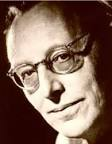

O pedagogo musical Carl Off.
Trabalho musical
Carl Orff é mais conhecido por Carmina Burana (1937), uma cantata encenada. É a primeira de uma trilogia intitulada Trionfi, que também inclui Catulli Carmina e Trionfo di Afrodite. Essas composições refletem seu interesse pela poesia medieval alemã. É descrita pelo compositor como "a celebração de um triunfo do espírito humano pelo balanço holístico e sexual". O trabalho foi baseado no verso erótico do século XII de um manuscrito chamado Carmina Burana (Bayerische Staatsbibliothek, Codex latinus monacensis, Clm 4660 & Clm 4660a),[5] encontrado num mosteiro Benediktbeuern da Baviera em 1803 e escritos pelos goliardos. Apesar de moderno em algumas de suas composições, Orff soube capturar o espírito da era medieval em sua trilogia. Os poemas medievais foram escritos em uma forma arcaica de alemão e latim.
Com o sucesso de Carmina Burana, Orff abandonou todos os seus trabalhos anteriores, exceto por Catulli Carmina e En trata, que foram reescritos até serem reaceites por Orff. Carmina Burana é provavelmente a peça mais famosa composta durante a época da Alemanha nazi. Foi tão popular que Orff recebeu subsídios em Viena para compor uma música para Sonho de uma Noite de Verão, a fim de substituir a música banida de Mendelssohn.
Orff relutava em denominar seus trabalhos simplesmente como óperas. Por exemplo, ele designou Der Mond (ou A lua em língua alemã) (1939) como Märchenoper (ou Ópera de conto de fadas). Die Kluge (A mulher sábia) (1943) também se incluía na mesma categoria, segundo ele. Em ambas as composições existe o mesmo som medieval ou atemporal, sem copiar os idiomas musicais do período.
Sobre Antigonae (1949), Orff alega que não era uma ópera, mas sim uma configuração musical de uma tragédia arcaica. O texto é uma excelente tradução para o alemão, por Friedrich Hölderlin, da peça de Sófocles do mesmo nome. A orquestração depende muito da percussão, mas é simples. Foi definida por muitos como minimalista, em razão da linha melódica da obra.
O último trabalho de Orff, De Temporum Fine Comoedia (Uma peça para o final dos tempos), teve sua apresentação no festival de música de Salzburgo em 20 de agosto de 1973, executada por Herbert von Karajan com a Orquestra Sinfônica e de Coro de Colônia.
Trabalho pedagógico
Ao longo de sua vida, Orff trabalhou bastante com crianças, usando a música como uma ferramenta educacional, tanto a melodia e o ritmo, tratadas através de palavras.
Nos círculos pedagógicos, Orff é lembrado por essa nova abordagem da educação musical, desenvolvida junto com Gunild Keetman e consubstanciada no seu método Orff-Schulwerk (1930-35). Sua simples instrumentação permite que mesmo crianças não iniciadas possam executar peças musicais com facilidade. O termo Schulwerk em alemão significa tarefa (ou trabalho) escolar.
